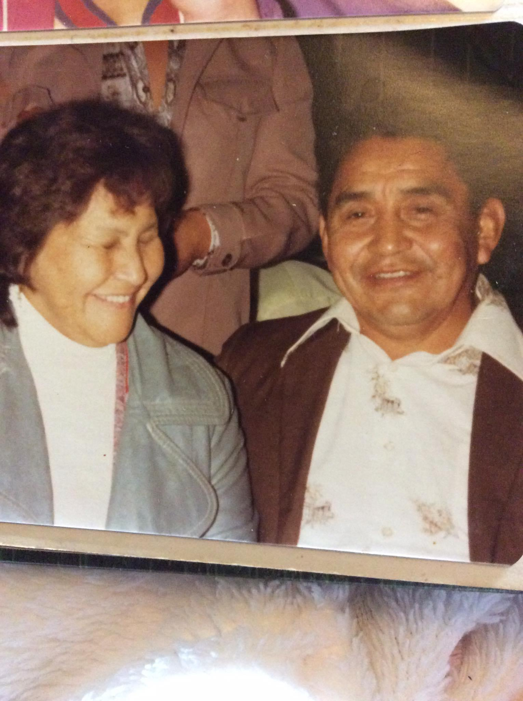
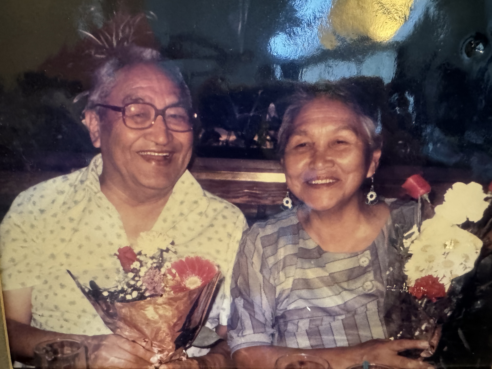

For this page, I will be adding the nučanuł words/names associated with their respective english terms/names
My goal is to be able to explain in our language all my family ties as far back as I can go.
This is my personal introduction so far...
ʔukłaasiš yacuusuƛ. Histaqšiƛs ʕaaḥuusʔatḥ ʔuḥiiš hisqʷiiʔatḥ.
ʔuḥuks ʔumiiqsu Marion ʔuḥiiš ʔuḥuks n̓uw̓iiqsu Floyd Campbell Sr. ʔuḥukʷic nananiiqsu Sarah and Andrew Webster Sr ʔuḥiiš Julia and Ernest Campbell. ʔuḥuks łuučmuup tupaałaqsa, Blair ʔuhiiš Becca. ʔuḥuks hačuumsiqsu wiitsitsqum ʔuhiiš Brent Sr. qacc̓anaks t̓aat̓na hakuumʔapi, Ralph ʔuḥiiš Sabrina. ʔuḥuks čakup qwana.
My name is Patricia Lindsay. I am from Ahousaht and Hesquiaht. My mother is Marion Campbell and my father is Floyd Campbell. My grandparents are Sarah & Andrew Webster Sr. and Julia & Ernest Campbell. My sisters are Christine, Blair and Becca. My brothers are Floyd Jr. & Brent Sr. My three children are Matilda, Ralph and Sabrina. My husband is Jeffery.
Key Terms for Family Titles
- mother - ʔum̓ʔiiqsu
- father - nuw̓iiqsu
- grandmother - naniiqsu
- grandfather - naniiqsu
- aunt - naʔiiqsu
- uncle - naʔiiqsu
- niece - ʔaasiiqsu
- nephew - wiiʔuu
- older sister - łuučm̓uup
- younger sister - y̓ukʷiiqsusa
- older brother - m̓eem̓a or tayii
- younger brother - y̓ukʷiiqsu or y̓ukʷaa
- cousin - ʕiikʷaacy̓i
- grandchild - kʷaaʔuuc
- great grandchild - ƛaayacqum
Julia Ignace & Ernest Campbell
My grandmother Julia Ignace is from hiškʷiiʔatḥ, my grandfather Ernest is from ʕaaḥuusʔatḥ. They have 9 children and 31 grandchildren. From those 31 grandchildren, they have 64 great-grandchildren and upwards of 30 great-great-grandchildren. Listed below are their children and grandchildren.
- Phyllis
- 6 children
- Selina
- 4 children
- Floyd Sr.
- 6 children
- Lyle-mit
- 4 children
- Darrell-mit
- 4 child
- Lory
- 1 child
- Ramona
- 3 children
- John
- Gordon
- 3 children
Sarah Titian & Andrew Webster Sr.
My grandmother Sarah is from ʕaaḥuusʔatḥ, my grandfather Andrew is from ʕaaḥuusʔatḥ, as well. They have 11 children and 41 grandchildren. They have 168 great-grandchildren and upwards of 40 great-great-grandchildren. Listed below are their children and grandchildren.
- Christina-mit
- Helena-mit
- 4 children
- Mary Jane
- 5 children
- Andrew Jr.
- 7 children
- Norman-mit
- 3 children
- Charles-mit
- 2 children
- Sandra
- 3 children
- Henderson
- 3 children
- Marion
- 6 children
- Glen Sr.
- 5 children
- Tuesday
- 4 children